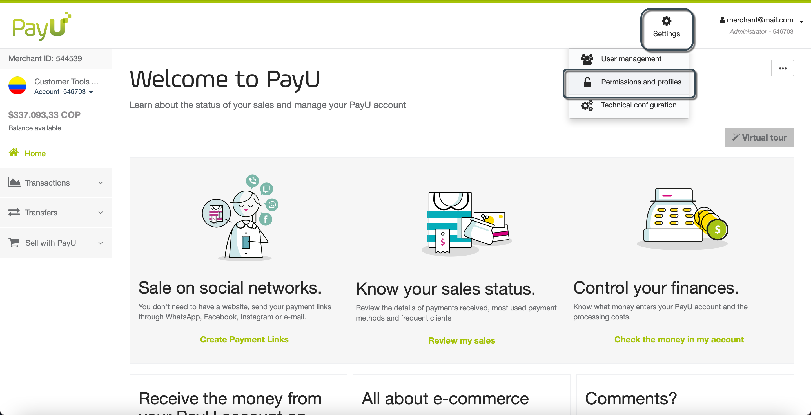
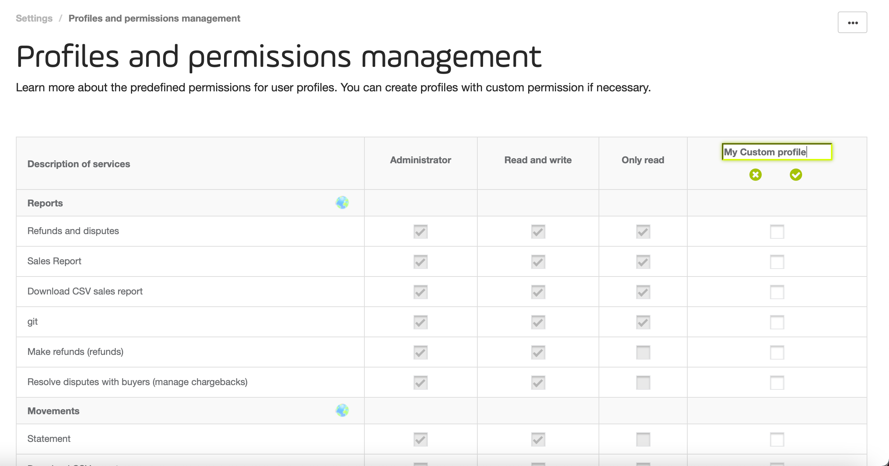
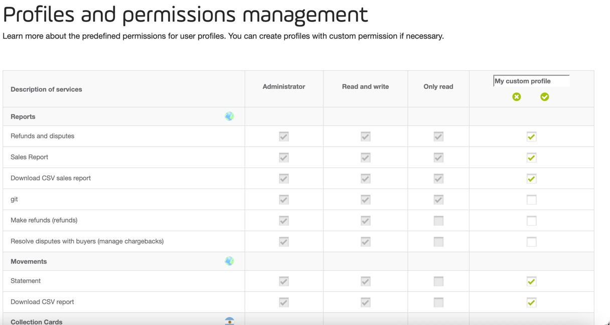

Profile and Permissions Management
A Profile is a set of permissions that allows a user to access to a feature of an account. A user using a profile can access to as many account there are in each merchant.
For further information about merchants, accounts, and more, read the concepts behind the PayU Module.
Permission required
To have access to this module, you need to have a profile with the following permission enabled:
- Review permissions and profiles
- Create, edit and delete profiles and permissions
Refer to Profiles and Permissions for more information.
Default profiles
By default, PayU provides three profiles that allow your users to access the accounts. These profiles are:
- Administrator: this profile has enabled all the permission of the account. A user entitled to this profile can create, review, update, and delete (or disable) the information related to the account. Furthermore, this user can see and download all the reports, view the technical information, resolve disputes, manage users, perform transfers, and manage profiles.
- Read and write: this profile is the equivalent of a manager profile. A user entitled to this profile can create, review, update, and delete (or disable) the information related to the account. Furthermore, this user can see and download all the reports, view the technical information, resolve disputes, and review the users and profiles created.
- Only read: this profile can access the account in read-only mode. A user entitled to this profile can create, review the information related to the account, download some of the reports, view the transfers of the account. Furthermore, this user cannot see the technical details or has access to the users and profiles.
These profiles cannot be deleted and their set of permissions are fixed, if any of these permissions does not meet your needs, you should create one.
Profile and Permission management
To manage users, open you PayU account and click Settings menu at the top the screen and then, select Permissions and profiles.

The Profiles and permissions management module opens, here, you can find a table with all the permissions to access PayU module and the profiles with access to them.

Create profiles
When none of the default profiles meets you requirements, you can create one and assign a customized set of permissions. To create a profile follow these steps.
- In the Profiles and permissions management module, click Create custom profile.

- A new column is added to the table. Provide a meaningful name for your custom profile..

- Once you set the name, you can assign as many permission as you need by clicking the checkbox of each row.

- When finish, click Save settings. If you click Delete changes, the profile is not saved and the column is deleted form the table.
Edit profiles
When editing a profile, you can either rename it, or assign or remove permissions.
-
To rename a given profile, click the ▾ symbol next to its name. Then, click Change name.

This enables the name field of the profile to update it. -
To assign or remove a permission, just click the checkbox of the permission.
When finish, click Save settings. If you click Delete changes, all the changes for both renaming and permission change are discarded.
Delete profiles
To delete a given profile by click the ▾ symbol next to its name. Then, click Delete.

If there are users entitled to the profile you are about to delete, you are prompted to set a new profile for them. Select the new profile from the dropdown menu and click Delete and reassign.

As soon as you delete the profile, its column is removed from the table and no user will be able to have this profile.